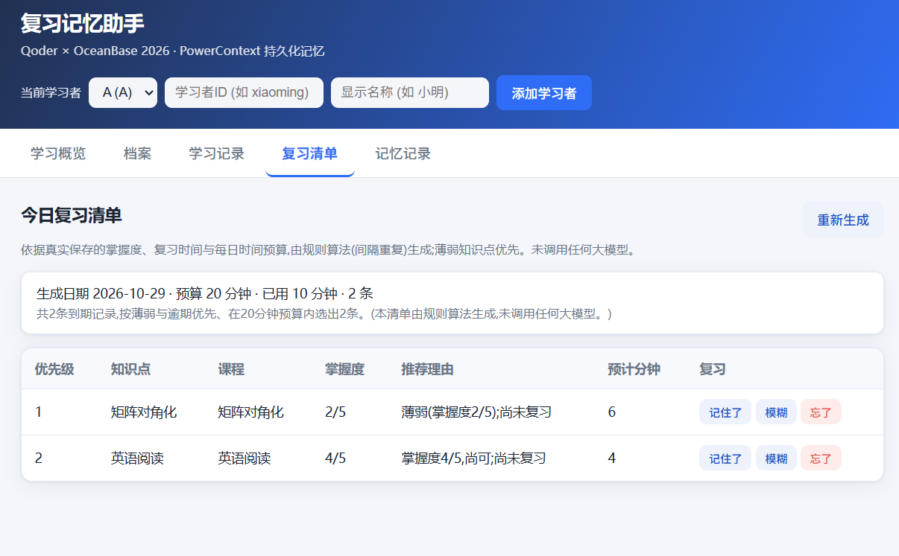
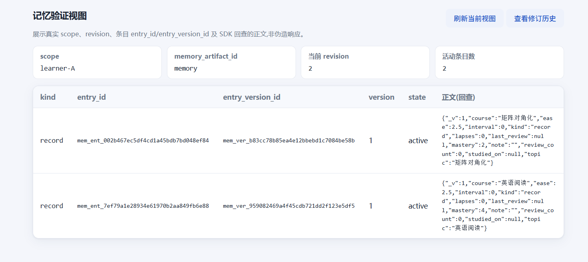
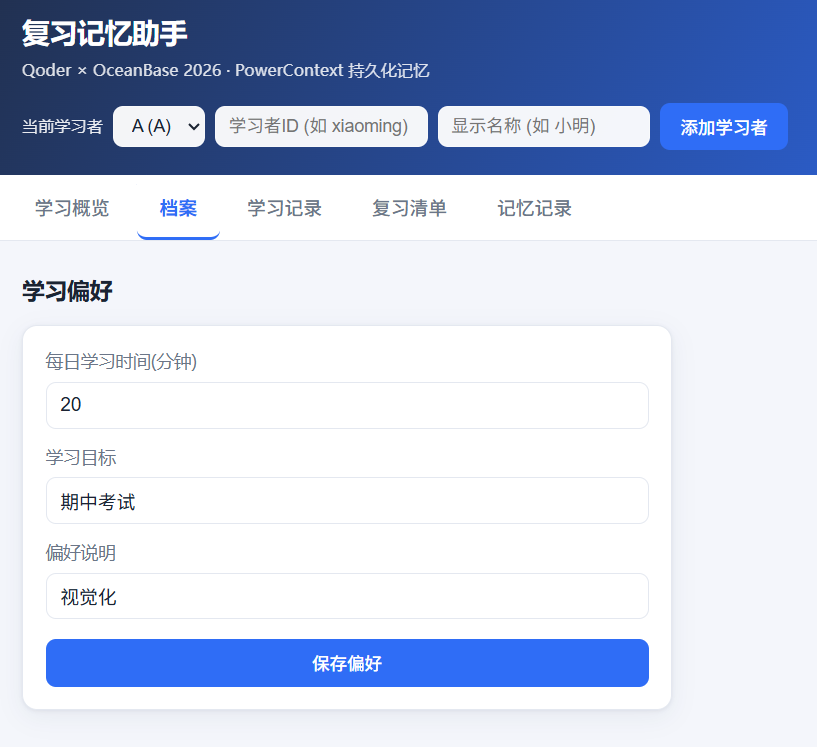
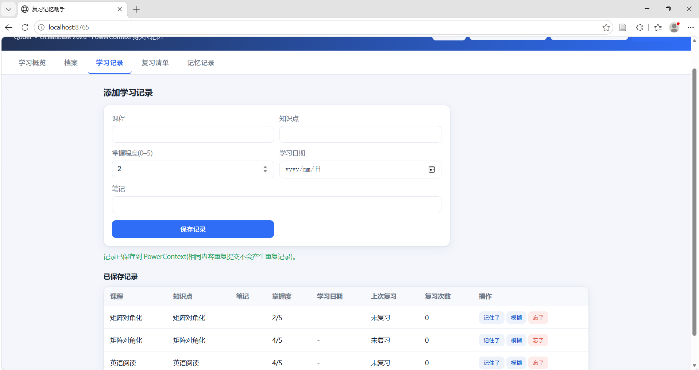
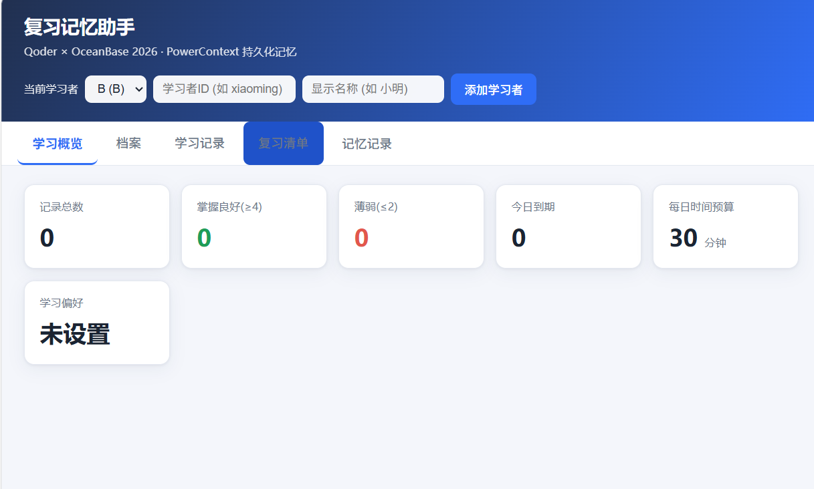
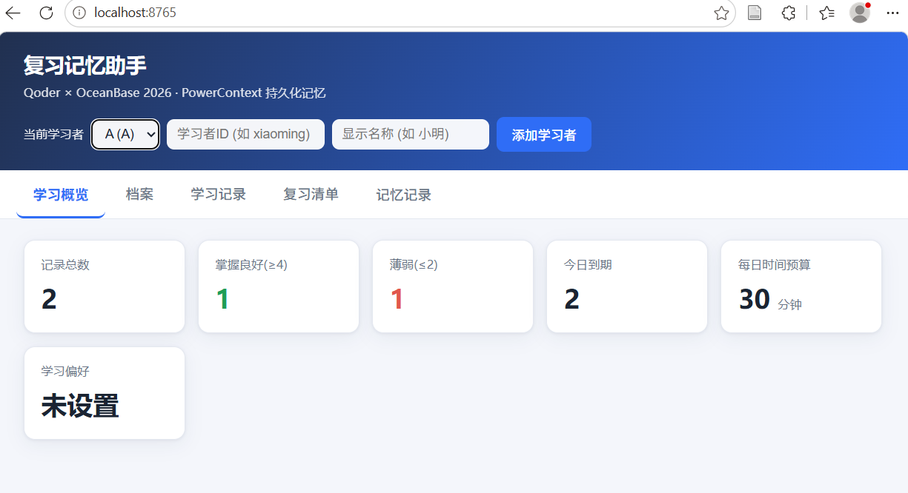

多学习者管理
创建与切换学习者;学习者注册表本身也持久化,重启后仍在。
Qoder × OceanBase 2026 比赛项目
为不同学习者保存学习偏好、薄弱知识点与复习进度,写入
powercontext[builtin] 的真实 SQLite 后端;服务重启后继续读取这些记忆,
并按掌握程度与每日学习时间生成复习清单。全程离线运行,不依赖任何大模型或外部 API Key。
复习记忆助手是一个多学习者的复习管理应用。它的核心主张是: 记忆不放在进程内存里,而是交给 PowerContext 的持久化后端托管。 因此关闭服务再启动,学习者的偏好、记录与进度都还在。
复习清单不是"看起来智能"的黑箱,而是规则算法(SM-2 风格间隔重复) 根据真实保存的掌握度、复习时间与每日时间预算算出来的,每条推荐都附带可读的理由。
创建与切换学习者;学习者注册表本身也持久化,重启后仍在。
保存每日学习时间、学习目标与偏好说明,生成清单时实际读取。
课程、知识点、笔记、掌握程度 0–5;字段类型与取值严格校验,非法数据被拒绝。
按真实掌握度、复习时间与每日预算生成,薄弱优先,每条附推荐理由。
回写复习结果更新最新进度;历史记录经 SDK 逐修订回查仍可查看。
展示真实 scope、revision、entry_id / entry_version_id 及 SDK 回查正文。
相同内容重复提交不会产生重复记录(复用 SDK 内容级幂等 + 应用层结果指纹)。
应用负责领域语义与算法,PowerContext 负责记忆的持久化与一致性。二者分工如下:
| 职责 | 承担者 |
|---|---|
| 记忆的持久化与一致性 | powercontext[builtin]:SQLite(WAL)后端、FTS5 索引、条目内容哈希去重、revision 版本与逐修订历史 |
| 读写记忆的 API | MemoryService(remember / head_entries / entries / revisions / changes / search / forget),经 app/memory_repo.py 调用 |
| 学习者隔离 | PowerContext 的 scope 机制;注册表用 study-coach-registry,每位学习者 learner-<id> |
| 领域语义(掌握度、间隔、预算) | 应用层:业务字段编码为带版本标识的规范 JSON 存入条目 text |
| 复习清单算法 | 应用层 app/review.py(纯规则 SM-2 风格,非 PowerContext、非 大模型) |
本项目将掌握程度、复习时间等业务字段编码为 JSON,存入 PowerContext 记忆条目的 text;条目标识、版本和引用由 SDK 管理。
以下截图来自本地运行(localhost:8765)的真实浏览器人工操作,非设计稿或示意图。






应用为本地运行版。在装好 uv 的环境中,于项目目录执行以下三步:
cd qoder/study-coach
# 1. 准备锁定依赖(安装到 .venv)
bash scripts/prepare.sh
# 2. 运行测试(独立临时数据库,不触碰用户数据)
bash scripts/test.sh
# 3. 启动服务(默认 http://127.0.0.1:8765)
bash scripts/start.sh浏览器打开 http://127.0.0.1:8765,先添加学习者,再设置偏好、录入学习记录、查看复习清单、回写复习结果,并在"记忆记录"页查看真实持久化内容。
与 PowerContext 真实 API 的唯一交互点是 app/memory_repo.py;清单算法在 app/review.py;字段校验与编解码在 app/models.py;HTTP 与前端在 app/app.py 与 static/。
仓库位于 GitHub 分支 feat/qoder-study-coach,含完整自动化测试(18 项)与真实浏览器截图证据。
qoder/study-coach/
├── app/
│ ├── app.py # FastAPI 入口、lifespan、路由
│ ├── memory_repo.py # 与 powercontext 真实 API 交互
│ ├── review.py # SM-2 风格调度 + 清单(纯规则)
│ └── models.py # 请求/响应、校验、条目编解码
├── static/ # 中文单页前端
├── tests/test_app.py # 集成与单元测试
├── scripts/ # prepare / test / start
├── docs/ # 需求/开发/验证/证据
├── pyproject.toml
└── uv.lock